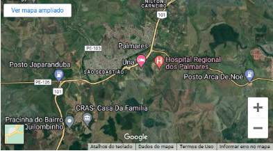
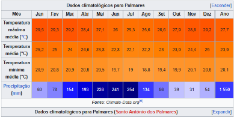

Informações Geográficas
O município de Palmares está localizado na região da Mata e na Microregião Mata Meridional do Estado de Pernambuco, limitando-se a norte com Bonito, a sul com Xexéu, a leste com Joaquim Nabuco e Água Preta e a oeste com Catende.
Palmares é uma cidade de Estado do Pernambuco. Os habitantes se chamam palmarenses.
O município se estende por 339,3 km² e contava com 63 250 habitantes no último censo. A densidade demográfica é de 186,4 habitantes por km² no território do município. Vizinho dos municípios de Água Preta, Joaquim Nabuco e Xexéu,Palmares se situa a 53 km a Sul-Oeste de Gravatá. Situado a 85 metros de altitude, de Palmares tem as seguintes coordenadas geográficas: Latitude: 8° 41' 20'' Sul, Longitude: 35° 35' 28'' Oeste. O prefeito de Palmares se chama JOSÉ BARTOLOMEU DE ALMEIDA MELO JUNIOR.
Clima
Segundo dados do Lamepe, a temperatura mínima já registrada em Palmares foi de 14,1 °C, ocorrida no dia 28 de julho de 1923. Já a máxima foi de 38,5 °C, observada em 18 de fevereiro de 2006. O maior acumulado de chuva registrado em 24 horas foi de 235,8 mm, em 3 de maio de 2011.[5]
O clima é o tropical, do tipo As', com máximas de 29 °C e mínimas entre 21 °C no verão, e mínimas de 19 °C e máximas entre 26 °C no inverno.
